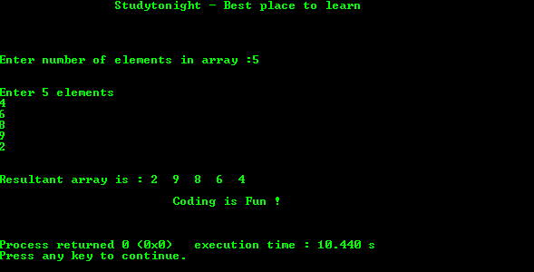

C 程序：打印数组的反转
原文：https://www.studytonight.com/c/programs/array/reverse-an-array
下面是一个反转数组的简单程序。
#include<stdio.h>
int main()
{
printf("\n\n\t\tStudytonight - Best place to learn\n\n\n");
int c, d, n, a[100], b[100];
printf("\n\nEnter number of elements in array :");
scanf("%d", &n);
printf("\n\nEnter %d elements\n", n);
for(c = 0; c < n; c++)
scanf("%d", &a[c]);
/*
temporarily storing elements into array b
starting from end of array a
*/
for(c = n-1, d = 0; c >= 0; c--, d++)
b[d] = a[c];
/*
copying reversed array into original.
Here we are modifying original array to reverse it.
*/
for(c = 0; c < n; c++)
a[c] = b[c];
printf("\n\n Resultant array is: ");
for(c = 0; c < n; c++)
printf("%d", a[c]);
printf("\n\n\t\t\tCoding is Fun !\n\n\n");
return 0;
}
输出:
